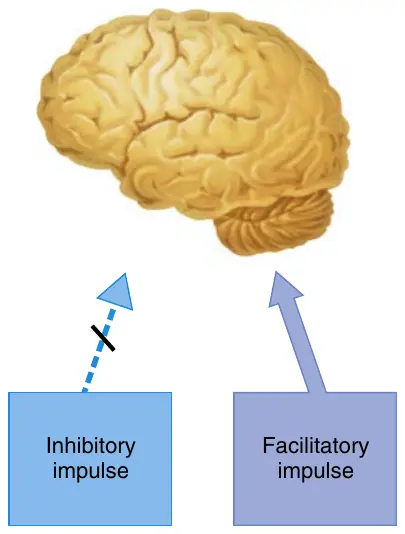
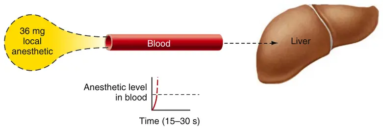

نسخه استخراجشده؛ ترجمه یا تأیید علمی انجام نشده است. وضعیت: captured
هشت دقیقه پس از سه کارپول برای IANB دوطرفه، بیمار ۲۸ سالهای تندتند حرف میزند، از طعم فلزی و وزوز گوش میگوید و کلماتش بریدهبریده شده است. اینها اضطراب ساده است یا نشانهی چیزی جدیتر؟

علائم با بالا رفتن سطح خونی پیش میروند. اول مرحلهی تحریک میآید، بعد سرکوب.
در سطح بالاتر، تشنج تونیکـکلونیک میآید و پس از آن سرکوب عمومی دستگاه عصبی مرکزی با افت فشار، نبض و تنفس.
پس از تزریق معمول داخل دهان، سطح خونی لیدوکائین حدود ۱ میکروگرم در میلیلیتر است (معمولاً ۰٫۵ تا ۲) و علامتی نمیدهد.

چرا دارویی که مغز را سرکوب میکند تشنج میدهد؟ بیحسی اول نورونهای مهاری قشر مغز را مهار میکند و تعادل به سود مسیرهای تحریکی به هم میخورد. قلب بسیار کمحساستر از مغز است و علائم قلبی معمولاً خیلی دیرتر میآیند.
نکتهی طلایی: مرحلهی تحریک ممکن است بسیار کوتاه باشد یا اصلاً نیاید؛ بهویژه با لیدوکائین، نخستین نشانه گاهی خوابآلودگی است که به بیهوشی و ایست تنفس میرسد. شدت سرکوب پس از تشنج معمولاً هماندازهی شدت تحریک پیش از آن است.